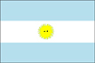

{kind=link}


![[Country map of Argentina]](../maps/ar-map.jpg)
| Argentina |  |
|
| | |
| Introduction |
Background: Following independence from Spain in 1816, Argentina experienced periods of internal political conflict between conservatives and liberals and between civilian and military factions. After World War II, a long period of Peronist dictatorship was followed by a military junta that took power in 1976. Democracy returned in 1983, and four free elections since then have underscored Argentina's progress in democratic consolidation.
| Geography |
Location: Southern South America, bordering the South Atlantic Ocean, between Chile and Uruguay
Geographic coordinates: 34 00 S, 64 00 W
Map references: South America
Area:
total:
2,766,890 sq km
land:
2,736,690 sq km
water:
30,200 sq km
Area - comparative: slightly less than three-tenths the size of the US
Land boundaries:
total:
9,665 km
border countries:
Bolivia 832 km, Brazil 1,224 km, Chile 5,150 km, Paraguay 1,880 km, Uruguay 579 km
Coastline: 4,989 km
Maritime claims:
contiguous zone:
24 nm
continental shelf:
200 nm or to the edge of the continental margin
exclusive economic zone:
200 nm
territorial sea:
12 nm
Climate: mostly temperate; arid in southeast; subantarctic in southwest
Terrain: rich plains of the Pampas in northern half, flat to rolling plateau of Patagonia in south, rugged Andes along western border
Elevation extremes:
lowest point:
Salinas Chicas -40 m (located on Peninsula Valdes)
highest point:
Cerro Aconcagua 6,960 m
Natural resources: fertile plains of the pampas, lead, zinc, tin, copper, iron ore, manganese, petroleum, uranium
Land use:
arable land:
9%
permanent crops:
1%
permanent pastures:
52%
forests and woodland:
19%
other:
19% (1993 est.)
Irrigated land: 17,000 sq km (1993 est.)
Natural hazards: San Miguel de Tucuman and Mendoza areas in the Andes subject to earthquakes; pamperos are violent windstorms that can strike the Pampas and northeast; heavy flooding
Environment - current issues:
environmental problems (urban and rural) typical of an industrializing economy such as soil degradation, desertification, air pollution, and water pollution
note:
Argentina is a world leader in setting voluntary greenhouse gas targets
Environment - international agreements:
party to:
Antarctic-Environmental Protocol, Antarctic Treaty, Biodiversity, Climate Change, Desertification, Endangered Species, Environmental Modification, Hazardous Wastes, Law of the Sea, Marine Dumping, Nuclear Test Ban, Ozone Layer Protection, Ship Pollution, Wetlands, Whaling
signed, but not ratified:
Climate Change-Kyoto Protocol, Marine Life Conservation
Geography - note: second-largest country in South America (after Brazil); strategic location relative to sea lanes between South Atlantic and South Pacific Oceans (Strait of Magellan, Beagle Channel, Drake Passage)
| People |
Population: 36,955,182 (July 2000 est.)
Age structure:
0-14 years:
27% (male 5,061,588; female 4,827,582)
15-64 years:
63% (male 11,625,574; female 11,613,358)
65 years and over:
10% (male 1,582,861; female 2,244,219) (2000 est.)
Population growth rate: 1.16% (2000 est.)
Birth rate: 18.59 births/1,000 population (2000 est.)
Death rate: 7.59 deaths/1,000 population (2000 est.)
Net migration rate: 0.65 migrant(s)/1,000 population (2000 est.)
Sex ratio:
at birth:
1.05 male(s)/female
under 15 years:
1.05 male(s)/female
15-64 years:
1 male(s)/female
65 years and over:
0.71 male(s)/female
total population:
0.98 male(s)/female (2000 est.)
Infant mortality rate: 18.31 deaths/1,000 live births (2000 est.)
Life expectancy at birth:
total population:
75.05 years
male:
71.67 years
female:
78.61 years (2000 est.)
Total fertility rate: 2.47 children born/woman (2000 est.)
Nationality:
noun:
Argentine(s)
adjective:
Argentine
Ethnic groups: white (mostly Spanish and Italian) 97%, mestizo, Amerindian, or other nonwhite groups 3%
Religions: nominally Roman Catholic 92% (less than 20% practicing), Protestant 2%, Jewish 2%, other 4%
Languages: Spanish (official), English, Italian, German, French
Literacy:
definition:
age 15 and over can read and write
total population:
96.2%
male:
96.2%
female:
96.2% (1995 est.)
| Government |
Country name:
conventional long form:
Argentine Republic
conventional short form:
Argentina
local long form:
Republica Argentina
local short form:
Argentina
Data code: AR
Government type: republic
Capital: Buenos Aires
Administrative divisions:
23 provinces (provincias, singular - provincia), and 1 federal district* (distrito federal); Buenos Aires; Catamarca; Chaco; Chubut; Cordoba; Corrientes; Distrito Federal*; Entre Rios; Formosa; Jujuy; La Pampa; La Rioja; Mendoza; Misiones; Neuquen; Rio Negro; Salta; San Juan; San Luis; Santa Cruz; Santa Fe; Santiago del Estero; Tierra del Fuego, Antartica e Islas del Atlantico Sur; Tucuman
note:
the US does not recognize any claims to Antarctica
Independence: 9 July 1816 (from Spain)
National holiday: Revolution Day, 25 May (1810)
Constitution: 1 May 1853; revised August 1994
Legal system: mixture of US and West European legal systems; has not accepted compulsory ICJ jurisdiction
Suffrage: 18 years of age; universal
Executive branch:
chief of state:
President Fernando DE LA RUA (since 10 December 1999); Vice President Carlos Alberto ALVAREZ (since 10 December 1999); note - the president is both the chief of state and head of government
head of government:
President Fernando DE LA RUA (since 10 December 1999); Vice President Carlos Alberto ALVAREZ (since 10 December 1999); note - the president is both the chief of state and head of government
cabinet:
Cabinet appointed by the president
elections:
president and vice president elected on the same ticket by popular vote for four-year terms; election last held 24 October 1999 (next to be held NA October 2003)
election results:
Fernando DE LA RUA elected president; percent of vote - 48.5%
Legislative branch:
bicameral National Congress or Congreso Nacional consists of the Senate (72 seats; formerly, three members appointed by each of the provincial legislatures; presently transitioning to one-third of the members being elected every two years to six-year terms) and the Chamber of Deputies (257 seats; one-half of the members elected every two years to four-year terms)
elections:
Senate - transition phase will begin in 2001 elections when all seats will be fully contested; winners will randomly draw to determine whether they will serve a two-year, four-year, or full six-year term, beginning a rotating cycle renovating a third of the body every two years; Chamber of Deputies - last held 24 October 1999 (next to be held NA October 2001)
election results:
Senate - percent of vote by bloc or party - NA; seats by bloc or party - Peronist 40, UCR 20, Frepaso 1, other 11; Chamber of Deputies - percent of vote by bloc or party - NA; seats by bloc or party - Alliance 124 (UCR 85, Frepaso 36, others 3), Peronist 101, AR 12, other 20
Judicial branch: Supreme Court (Corte Suprema), the nine Supreme Court judges are appointed by the president with approval of the Senate
Political parties and leaders: Action for the Republic or AR [Domingo CAVALLO]; Alliance (UCR, Frepaso and others) [leader NA]; Front for a Country in Solidarity or Frepaso (a four-party coalition) [Carlos ALVAREZ]; Justicialist Party or PJ [Carlos Saul MENEM] (Peronist umbrella political organization); Radical Civic Union or UCR [Raul ALFONSIN]; several provincial parties
Political pressure groups and leaders: Argentine Association of Pharmaceutical Labs (CILFA); Argentine Industrial Union (manufacturers' association); Argentine Rural Society (large landowners' association); Armed Forces; business organizations; General Confederation of Labor or CGT (Peronist-leaning umbrella labor organization); Peronist-dominated labor movement; Roman Catholic Church; students
International organization participation: AfDB, Australia Group, BCIE, CCC, ECLAC, FAO, G- 6, G-11, G-15, G-19, G-24, G-77, IADB, IAEA, IBRD, ICAO, ICC, ICFTU, ICRM, IDA, IFAD, IFC, IFRCS, IHO, ILO, IMF, IMO, Inmarsat, Intelsat, Interpol, IOC, IOM, ISO, ITU, LAES, LAIA, Mercosur, MINURSO, MIPONUH, MTCR, NSG, OAS, OPANAL, OPCW, PCA, RG, UN, UN Security Council (temporary), UNCTAD, UNESCO, UNFICYP, UNHCR, UNIDO, UNIKOM, UNITAR, UNMIBH, UNMIK, UNMOP, UNTAET, UNTSO, UNU, UPU, WCL, WFTU, WHO, WIPO, WMO, WToO, WTrO, ZC
Diplomatic representation in the US:
chief of mission:
Ambassador Guillermo GONZALEZ Enrique
chancery:
1600 New Hampshire Avenue NW, Washington, DC 20009
telephone:
[1] (202) 238-6400
FAX:
[1] (202) 238-6471
consulate(s) general:
Atlanta, Chicago, Houston, Los Angeles, Miami, New York
Diplomatic representation from the US:
chief of mission:
Ambassador (vacant)
embassy:
4300 Colombia, 1425 Buenos Aires
mailing address:
international mail: use street address; APO address: Unit 4334, APO AA 34034
telephone:
[54] (1) 777-4533, 4534
FAX:
[54] (1) 777-0197
Flag description: three equal horizontal bands of light blue (top), white, and light blue; centered in the white band is a radiant yellow sun with a human face known as the Sun of May
| Economy |
Economy - overview: Argentina benefits from rich natural resources, a highly literate population, an export-oriented agricultural sector, and a diversified industrial base. However, when President Carlos MENEM took office in 1989, the country had piled up huge external debts, inflation had reached 200% per month, and output was plummeting. To combat the economic crisis, the government embarked on a path of trade liberalization, deregulation, and privatization. In 1991, it implemented radical monetary reforms which pegged the peso to the US dollar and limited the growth in the monetary base by law to the growth in reserves. Inflation fell sharply in subsequent years. In 1995, the Mexican peso crisis produced capital flight, the loss of banking system deposits, and a severe, but short-lived, recession; a series of reforms to bolster the domestic banking system followed. Real GDP growth recovered strongly, reaching 8% in 1997. In 1998, international financial turmoil caused by Russia's problems and increasing investor anxiety over Brazil produced the highest domestic interest rates in more than three years, halving the growth rate of the economy. Conditions worsened in 1999 with GDP falling by 3%. President Fernando DE LA RUA, who took office in December 1999, sponsored tax increases and spending cuts to reduce the deficit, which had ballooned to 2.5% of GDP in 1999. The new government also arranged a new $7.4 billion stand-by facility with the IMF for contingency purposes - almost three times the size of the previous arrangement. Key challenges facing the new government include reforming the country's rigid labor code and addressing the precarious financial situation of several highly indebted provinces.
GDP: purchasing power parity - $367 billion (1999 est.)
GDP - real growth rate: -3% (1999 est.)
GDP - per capita: purchasing power parity - $10,000 (1999 est.)
GDP - composition by sector:
agriculture:
7%
industry:
29%
services:
64% (1999 est.)
Population below poverty line: 36% (1998 est.)
Household income or consumption by percentage share:
lowest 10%:
NA%
highest 10%:
NA%
Inflation rate (consumer prices): -2% (1999 est.)
Labor force: 15 million (1999)
Labor force - by occupation: agriculture NA%, industry NA%, services NA%
Unemployment rate: 14% (December 1999)
Budget:
revenues:
$44 billion
expenditures:
$48 billion, including capital expenditures of $NA billion (2000 est.)
Industries: food processing, motor vehicles, consumer durables, textiles, chemicals and petrochemicals, printing, metallurgy, steel
Industrial production growth rate: -7% (1999 est.)
Electricity - production: 75.237 billion kWh (1998)
Electricity - production by source:
fossil fuel:
42.71%
hydro:
47.55%
nuclear:
9.47%
other:
0.27% (1998)
Electricity - consumption: 75.57 billion kWh (1998)
Electricity - exports: 250 million kWh (1998)
Electricity - imports: 5.85 billion kWh (1998)
Agriculture - products: sunflower seeds, lemons, soybeans, grapes, corn, tobacco, peanuts, tea, wheat; livestock
Exports: $23 billion (f.o.b., 1999 est.)
Exports - commodities: edible oils, fuels and energy, cereals, feed, motor vehicles
Exports - partners: Brazil 24%, EU 21%, US 11% (1999 est.)
Imports: $25 billion (c.i.f., 1999 est.)
Imports - commodities: machinery and equipment, motor vehicles, chemicals, metal manufactures, plastics
Imports - partners: EU 28%, US 22%, Brazil 21% (1999 est.)
Debt - external: $149 billion (1999 est.)
Economic aid - recipient: $2.833 billion (1995)
Currency: 1 peso = 100 centavos
Exchange rates: peso is pegged to the US dollar at an exchange rate of 1 peso = $1
Fiscal year: calendar year
| Communications |
Telephones - main lines in use: 7.5 million (1997)
Telephones - mobile cellular: 1.8 million (1997)
Telephone system:
12,000 public telephones; extensive modern system but many families do not have telephones; despite extensive use of microwave radio relay, the telephone system frequently fails during rainstorms, even in Buenos Aires
domestic:
microwave radio relay and a domestic satellite system with 40 earth stations serve the trunk network
international:
satellite earth stations - 3 Intelsat (Atlantic Ocean); two international gateways near Buenos Aires; Atlantis II submarine cable (1999)
Radio broadcast stations: AM 260 (including 10 inactive stations), FM NA (probably more than 1,000, mostly unlicensed), shortwave 6 (1998)
Radios: 24.3 million (1997)
Television broadcast stations: 42 (plus 444 repeaters) (1997)
Televisions: 7.95 million (1997)
Internet Service Providers (ISPs): 47 (1999)
| Transportation |
Railways:
total:
38,326 km (160 km electrified)
broad gauge:
24,481 km 1.676-m gauge (134 km electrified)
standard gauge:
2,765 km 1.435-m gauge (26 km electrified)
narrow gauge:
11,080 km 1.000-m gauge (1999)
Highways:
total:
215,434 km
paved:
63,553 km (including 734 km of expressways)
unpaved:
151,881 km (1998 est.)
Waterways: 10,950 km navigable
Pipelines: crude oil 4,090 km; petroleum products 2,900 km; natural gas 9,918 km
Ports and harbors: Bahia Blanca, Buenos Aires, Comodoro Rivadavia, Concepcion del Uruguay, La Plata, Mar del Plata, Necochea, Rio Gallegos, Rosario, Santa Fe, Ushuaia
Merchant marine:
total:
26 ships (1,000 GRT or over) totaling 218,540 GRT/333,413 DWT
ships by type:
cargo 9, petroleum tanker 11, rail car carrier 1, refrigerated cargo 2, roll-on/roll-off 1, short-sea passenger 2 (1999 est.)
Airports: 1,359 (1999 est.)
Airports - with paved runways:
total:
142
over 3,047 m:
5
2,438 to 3,047 m:
26
1,524 to 2,437 m:
60
914 to 1,523 m:
44
under 914 m:
7 (1999 est.)
Airports - with unpaved runways:
total:
1,217
over 3,047 m:
2
2,438 to 3,047 m:
2
1,524 to 2,437 m:
63
914 to 1,523 m:
614
under 914 m:
536 (1999 est.)
| Military |
Military branches: Argentine Army, Navy of the Argentine Republic (includes Naval Aviation, Marines, and Coast Guard), Argentine Air Force, National Gendarmerie, National Aeronautical Police Force
Military manpower - military age: 20 years of age
Military manpower - availability:
males age 15-49:
9,287,499 (2000 est.)
Military manpower - fit for military service:
males age 15-49:
7,530,476 (2000 est.)
Military manpower - reaching military age annually:
males:
341,544 (2000 est.)
Military expenditures - dollar figure: $4.3 billion (FY99)
Military expenditures - percent of GDP: 1.3% (FY99)
| Transnational Issues |
Disputes - international: claims UK-administered Falkland Islands (Islas Malvinas); claims UK-administered South Georgia and the South Sandwich Islands; territorial claim in Antarctica
Illicit drugs: increasing use as a transshipment country for cocaine headed for Europe and the US; increasing use as a money-laundering center; domestic consumption of drugs has skyrocketed